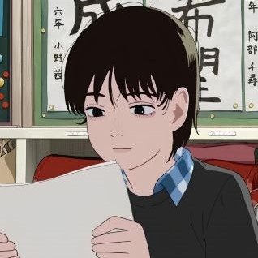

Look Back (Japanese: ルックバック) is a Japanese one-shot web manga written and illustrated by Tatsuki Fujimoto. It was published on Shueisha's Shōnen Jump+ in July 2021. It tells the story of Ayumu Fujino, a young manga artist who, driven by rivalry and friendship with a reclusive classmate, strives to improve her craft and finds purpose in creating art. An anime film adaptation produced by Studio Durian premiered in June 2024.
Look Back (ルックバック) by Tatsuki Fujimoto


Main characters

Fujino
A talented and introspective artist who struggles with self-doubt and the complexities of her emotions. Her journey explores the power of art and the importance of friendship.

Kyomoto
Fujin's passionate classmate who inspires her to confront her fears and embrace her creativity. His support and determination play a key role in her artistic growth.